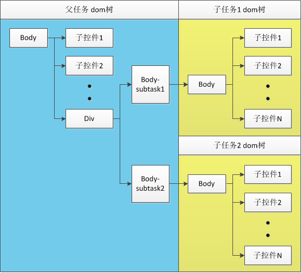

| 版本号 | 日期 | 作者 | 描述 |
|---|---|---|---|
| V1.0 | 2015.08.27 | 周长晋 | 初稿 |
在目前的银行业务办公中，业务人员经常会遇到同时处理多个任务的情况，如业务人员正在办理工作记录填报（任务1）的过程中，临时来了个客户，需要通过办理理财产品查询的业务（任务2）。任务1和任务2为两个完全独立的功能，业务人员可以随意切换查看，以及随意打开关闭某个任务。这种场景通过我们目前产品中的单任务设计是很难做到的，因此我们需要扩展产品的功能，以达到支持多任务的业务场景。
多任务拟实现的效果与浏览器能同时打开多个标签页类似。
由于子任务的功能需求和根任务类似，我们可以通过扩展body的扩展控件作为子任务的容器控件。
<body type=subtask" class="subtask1"></body>
body-subtask的支持以下属性：
id：控件的idname：控件的nameclass：控件应用的样式hide：显示/隐藏body-subtask的支持以下样式：
width、height：控件的宽高。同body控件，子任务控件的宽高不可动态修改，我们只支持初始化时的静态设置left、right、top、bottom：控件的位置background-color、background-image、filter：背景色、背景图和渐变色display、visbility：显示/隐藏为增强子任务间的独立性，减少数据交互，我们为每个子任务都单独分配一个dom树和一个lua状态机。子任务的dom树和lua状态机也可存储在对应body-subtask控件中，与其绑定。
子任务dom树与父任务dom树相互无联系，即遍历父任务dom树，不会遍历到子任务dom树内的节点；同样遍历子任务dom树，也不会遍历到父任务dom树内的节点。

由于在实际使用场景中，不太可能对多个任务同时做操作，因此程序中所有的lua状态机都可以跑在同一个lua线程中，
子任务lua状态机对现有lua接口的支持如下：
document、history以及control:setInnerHTML、control:appendChild、control:insertBefore、control:removeChild；location:reload与location:replace，由于操作的是整体页面，在子任务不适用，不应支持，同样功能应该用其他接口或者扩展lua实现。replace操作可用父控件的setInnerHTML实现，reload功能需要扩展新的lua接口实现。accelerometer、audio、corp、database、file、gesture、gps、http、json、kv、offline、qrcode、screen、system、timer、utility、video、window及control剩余接口；子任务控件内的页面显示内容，可通过调用setInnerHTML接口局部刷新的方式显示。
local subTask1 = document:getElementbyId("task1");
subTask1：setInnerHTML(<content>...</content>);
为保证通用性，子任务控件支持接收现在规范的页面报文结构，但由于子任务的特殊性，需要对body控件的实现做修改。之前的body控件，强制是铺满整个屏幕的，因此对width、height、left、right、top、bottom样式都是不支持的，而子任务控件里的body需要对这些样式增加支持，因此我们需要在解析body的时候增加判断，看当前body属于父任务dom树还是子任务dom树，以此来决定是否应用这些样式。
产品目前没有控件reload的接口，要实现子任务控件的reload，需要扩展新的lua接口。
h5类型的任务，可以通过webview控件实现，webview的实现方式完全可以满足现有需求，无需特殊处理。
我们可以通过5.3新增的document:createElement接口创建一个新的子任务控件。然后通过control:appendChild将子任务控件加载到根任务中，或者通过control:removeChild关闭子任务。
function openTask(id)
local div = document:getElementById("div");
if id == 1 then
local subTask1 = document:createElement(body, {type="subtask", class="subtask1", id="task1"});
div:appendChild(subTask1);
else if id == 2 then
local subTask2 = document:createElement(div, {type="webview", class="subtask2", id="task2"});
div:appendChild(subTask2);
end
end
function showTask(id)
local subTask1 = document:getElementbyId("task1");
local subTask2 = document:getELementById("task2");
if id == 1 then
if subTask1 then
subTask1:setStyleByName("display", "block");
end
if subTask2 then
subTask2:setStyleByName("display", "none");
end
else if id == 2 then
if subTask1 then
subTask1:setStyleByName("display", "none");
end
if subTask2 then
subTask2:setStyleByName("display", "block");
end
end
end
function closeTask(id)
local div = document:getElementById("div");
if id == 1 then
local subTask1 = document:getElementbyId("task1");
if subTask1 then
div:removeChild(subTask1);
end
else if id == 2 then
local subTask2 = document:getELementById("task2");
if subTask2 then
div:removeChild(subTask2);
end
end
end
<body>
<input type="button" value="打开任务一" onclick="openTask(1)"/>
<input type="button" value="打开任务二" onclick="openTask(2)"/>
<input type="button" value="显示任务一" onclick="showTask(1)"/>
<input type="button" value="显示任务二" onclick="showTask(2)"/>
<input type="button" value="关闭任务一" onclick="closeTask(1)"/>
<input type="button" value="关闭任务二" onclick="closeTask(2)"/>
<div class="class1" id="div"></div>
</body>